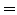

The single-comparison output files contain three columns:
Each file refers to the analysis of a single target-comparison dataset pair. Correspondingly, two six-digit indices #target#, #comparison# are used to form the filenames, #target#.cd.#comparison#.dat (conditional mode) and #target#.cd.#comparison#.dat (composed mode).
Example. The output file 000004.cd.000026.dat contains conditional sigs for 000004.<project>.dat as target data and 000026.<project>.dat as comparison data.
Example. In the sample CinderellaNative, there are 8 single-comparison output files: 000001.cd.000000.dat to 000008.cd.000000.dat. Since there is only one comparison dataset available, these files are redundant, because #target#.cd.dat  #target#.cd.000000.dat.
Piet Reegen
2009-09-23